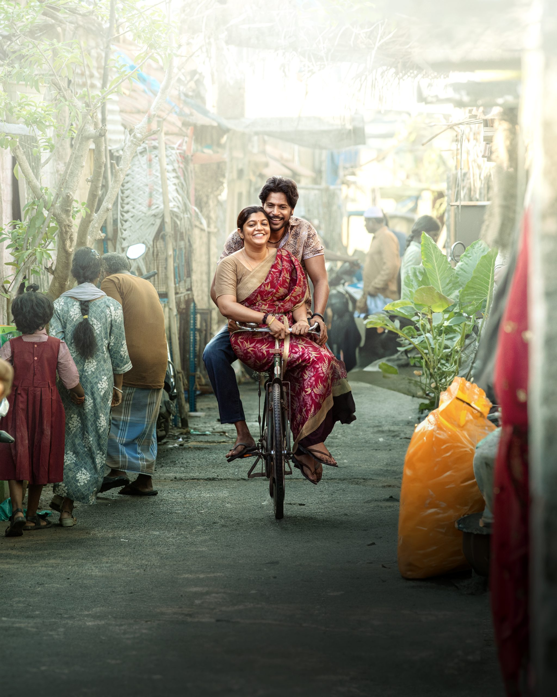

Raayan (Tamil pronunciation: is a 2024 Indian Tamil-language neo-noir action drama film written and directed by Dhanush, in his second directorial venture. It is produced by Kalanithi Maran under Sun Pictures. The film stars Dhanush in the titular role, alongside Sundeep Kishan, Kalidas Jayaram, Dushara Vijayan, S. J. Suryah, Selvaraghavan, Prakash Raj, Aparna Balamurali, Varalaxmi Sarathkumar, Saravanan, Dileepan and Divya Pillai. In the film, a fast-food hotel owner in North Chennai struggles to protect his family when they inadvertently get muddled in a war between two rival gangs resulting in unforeseen circumstances.
Venkatesh Prabhu Kasthuri Raja (born 28 July 1983),[2] known professionally as Dhanush, is an Indian actor, filmmaker, lyricist and playback singer who primarily works in Tamil cinema. Having starred in 50 films over his career, his accolades include four National Film Awards (two as actor and two as producer), fourteen SIIMA Awards, eight Filmfare Awards South and a Filmfare Award. One of the highest paid actors in Indian cinema, he has been included in the Forbes India Celebrity 100 list six times. Dhanush's first film was Thulluvadho Ilamai, a 2002 coming-of-age film directed by his father, Kasthuri Raja. He achieved further success in Polladhavan (2007) and Yaaradi Nee Mohini (2008), both of which were critically acclaimed and commercially successful. His role as a rooster fight jockey in Aadukalam (2010) won him the National Film Award for Best Actor and the Filmfare Award for Best Actor – Tamil. He continued success with films, including Maryan (2013), Velaiilla Pattadhari (2014), Anegan (2015), Maari (2015), Kodi (2016), Vada Chennai (2018), Asuran (2019), Thiruchitrambalam (2022), Vaathi (2023) and Raayan (2024), the lattermost of which emerged as his highest-grossing release.
Kathavaraayan "Raayan", a food-truck owner in North Chennai, lives with his siblings consisting of two younger brothers Muthuvelraayan "Muthu" and Manickavelraayan "Manickam" and younger sister Durga, whom Raayan dotes on. Raayan has been taking care of his siblings since childhood as their parents never returned. Manickam is a college student, while Muthu is a hot-headed alcoholic who is in love with Meghalai. Durai and Sethuraman "Sethu" are rival gangsters in the area who have a feud with each other after Durai killed Sethu's father. R. Sargunam, a recently transferred police commissioner, wants to create a conflict between Sethu and Durai and kill them both in an encounter. One day, Sargunam learns that Durai's son is in a bar and hires a goon to kill him. Muthu, who was also present at the bar, instead ends up killing him after getting into a fight with him. Although most people believe that Sethu killed Durai's son, Durai finds out about Muthu and tells Raayan to hand over Muthu within 24 hours. However, Raayan, Muthu, and Manickam kill Durai and his gang.
1.Dhanush
2.Sundeep Kishan
3.Kalidas Jayaram
4.Dushara Vijayan
5.SJ Surya
6.Aparna Balamurali
Dhanush
A.R.Rahman
Dhanush